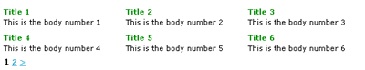

DataTable Class
DataTable is an html table of records, where each cell is a
record.
You can set the number of items/records per row and number of
items/records per page, and the cell content pattern.
Think for example to a fotogallery page, where x thumbnails are
displayed for each row.
Each cell contain a simple "img" tag.
Sample
cell_template pattern will be used to build table cells.
Can be a custom html content, and use the rapyd pattern concept.
Important: DataTable extends DataSet, so inherit all properties and methods.
DataTable Reference
$table = new DataTable($title, $datasource);
string: $title (can be null) is a simple label.
mixed: $datasource is a source of data. See rapyd datasource concept.
Settings
| Property | Default Value | Options | Description |
|---|---|---|---|
| base_url | Current URL | a URL | * url of the controller function of dataset (autodetected). |
| uri_segment | Last segment | numeric | * offset segment in the uri (autodetected). |
| per_page | No Default | numeric | * number of record per page. |
| cell_template | No Default | string | an html pattern for each table cell |
| num_links | 2 | numeric | The number of "digit" links you would like before and after the selected page number. For example, the number 2 will place two digits on either side, as in the example links at the very top of this page. |
| ** | ** | ** | ** |
(*) from CI pagination class.
(**) If you need to customize nav links you can pass as parameter all CI pagination configs
Important: Since 0.9.6
the base_uri an uri_segment need to
specify/count the "osp" (offset position) so:
base_uri will be like: "controller/function/osp" and
uri_segment will be: 4 not 3.
Methods
$table->build();
Exec queries if datasource is ActiveRecord, and fill $table->output html result
Output
| Property | Type | Description |
|---|---|---|
| output | html | html table with the subset of results for current page, plus navigation links |